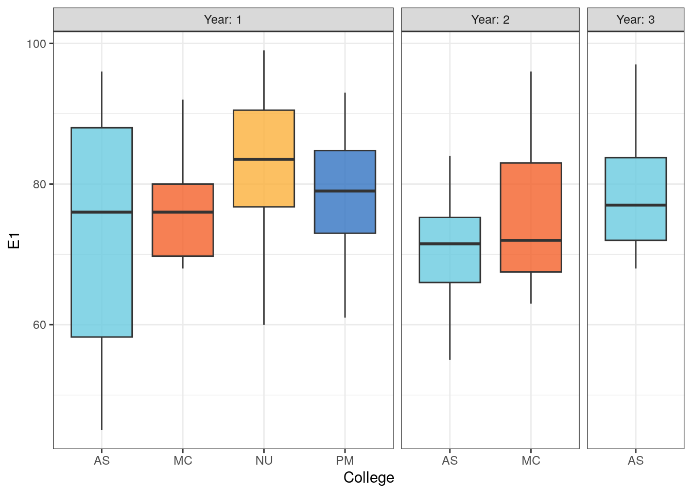

Chapter 2 Graphics
Outline
2.1 An example
The data is a stratified sample of 70 students from a large section course. The strata were based on the college the students belonged to (AS = Arts & Sciences, PM = Professional Management, MC = Mass Communications, and NU=Nursing) and their year in school (ranging from 1st to 3rd based on credit hours, and limited based on expectation of having at least 10 students from that college at that grade level). The response variables are their Hmwk = Homework Average and E1 to E3 = their grades on the first three exams.
library(ggplot2)
students <- readr::read_table("data/CourseData.txt")[, -1]
students## # A tibble: 70 × 6
## College Year Hmwk E1 E2 E3
## <chr> <dbl> <dbl> <dbl> <dbl> <dbl>
## 1 NU 1 83.8 79 89 59
## 2 NU 1 77.1 60 97 63
## 3 NU 1 94.5 83 88 69
## 4 NU 1 84.3 91 77 72
## 5 NU 1 73.4 68 79 76
## 6 NU 1 94.7 89 96 79
## 7 NU 1 77.7 76 43 84
## 8 NU 1 92.9 92 81 84
## 9 NU 1 95.9 84 85 84
## 10 NU 1 98.2 99 84 85
## # … with 60 more rowsggplot(students, aes(College, E1)) +
geom_boxplot(aes(fill = stage(College, after_scale = alpha(fill, 0.8))), show.legend = FALSE) +
facet_grid(~Year, scales = "free", space = "free_x", labeller = labeller(Year = label_both)) +
theme_bw() +
scale_fill_manual(values = c("#69cadf", "#f4602a", "#fbb03b", "#3273c2"))